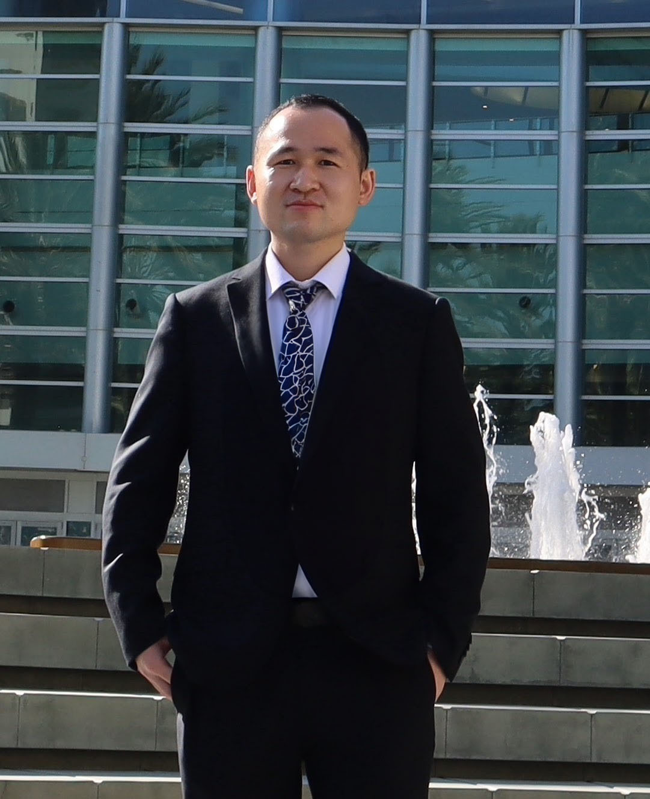

I am Wei Liu. I am currently a tenure-track assistant professor in the Faculty of Business in Scitech, School of Management, University of Science and Technology of China (USTC). Previously, I received my PhD in the Department of Statistics and Operations Research at the University of North Carolina at Chapel Hill under the supervision of Professors Vinayak Deshpande and Vidyadhar Kulkarni. After graduation, I worked as a Ross-Lynn Postdoctoral Fellow in Supply Chain and Operations Management at the Mitchell E. Daniels, Jr. School of Business at Purdue University.
My research focuses on data-driven resource allocation in real-world operations, including airline, healthcare, and service operations. I study how to enhance network resilience and service level using data-driven approaches, optimization, queueing theory, and stochastic modeling.
My primary goal as a teacher is to inspire my students for self-study. I do this through thoughtful preparation of course content and engaging delivery, by thinking from the students’ perspective, and by connecting abstract concepts to tangible applications and demonstrations. I believe it is very important to maintain a positive but challenging classroom environment to foster student confidence and encourage active participation. I also believe that homework and student feedback are important for consolidating materials and improving the learning experience.
Department of Management Science
School of Management
University of Science and Technology of China
Hefei, China
Email: liuweimsor@gmail.com
LinkedIn: www.linkedin.com/in/wei-liu-or/